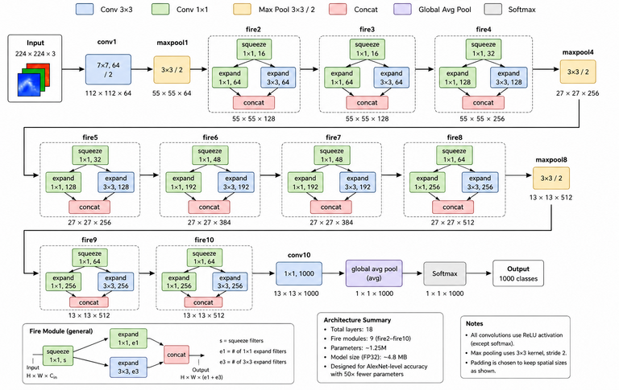
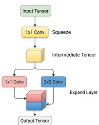

Noodle SqueezeNet-1.1 ImageNet Demo on ESP32-S3 N16R8
This note summarizes the SqueezeNet-1.1 ImageNet classifier implemented with the Noodle framework. The example is intended as a stress test for large activation tensors, Fire modules, tensor concatenation, and grow-only NoodleBuffer behavior on an ESP32-S3 module with PSRAM.
1. Target Hardware
The main target board is an ESP32-S3 N16R8-class module with:
- 16 MB flash
- 8 MB PSRAM
- 224 × 224 RGB image input
- Serial image transfer from a host computer
- Noodle inference running on-device
The experiment uses PSRAM for large activation buffers. Internal heap is still important for runtime objects, small buffers, and system overhead.
2. Model Overview
The workload is based on a SqueezeNet-1.1 ImageNet classifier. The model processes a full ImageNet-sized input:
Input image: 224 × 224 × 3
The network exercises the following operations:
- convolution
- max pooling
- Fire modules
- squeeze convolution
- expand 1 × 1 branch
- expand 3 × 3 branch
- tensor concatenation
- global average pooling
- softmax classification
This makes it a useful benchmark for Noodle because the network is not purely sequential. The Fire modules introduce branch-like tensor roles, which stress buffer reuse and memory visibility.
The following code listing show its Noodle implementation.
// Encoder
ConvMem L01;
L01.K = 3; L01.P = 65535; L01.S = 1; L01.OP = 0; L01.O = 16;
L01.weight = w01; L01.bias = b01; L01.act = ACT_RELU;
ConvMem L02;
L02.K = 3; L02.P = 65535; L02.S = 1; L02.OP = 0; L02.O = 16;
L02.weight = w02; L02.bias = b02; L02.act = ACT_RELU;
ConvMem L03;
L03.K = 3; L03.P = 65535; L03.S = 2; L03.OP = 0; L03.O = 32;
L03.weight = w03; L03.bias = b03; L03.act = ACT_RELU;
ConvMem L04;
L04.K = 3; L04.P = 65535; L04.S = 1; L04.OP = 0; L04.O = 32;
L04.weight = w04; L04.bias = b04; L04.act = ACT_RELU;
ConvMem L05;
L05.K = 3; L05.P = 65535; L05.S = 2; L05.OP = 0; L05.O = 64;
L05.weight = w05; L05.bias = b05; L05.act = ACT_RELU;
ConvMem L06;
L06.K = 3; L06.P = 65535; L06.S = 1; L06.OP = 0; L06.O = 64;
L06.weight = w06; L06.bias = b06; L06.act = ACT_RELU;
// Decoder
ConvMem L07;
L07.K = 3; L07.P = 65535; L07.S = 2; L07.OP = 1; L07.O = 32;
L07.weight = w07; L07.bias = b07; L07.act = ACT_RELU;
ConvMem L08;
L08.K = 3; L08.P = 65535; L08.S = 1; L08.OP = 0; L08.O = 32;
L08.weight = w08; L08.bias = b08; L08.act = ACT_RELU;
ConvMem L09;
L09.K = 3; L09.P = 65535; L09.S = 2; L09.OP = 1; L09.O = 16;
L09.weight = w09; L09.bias = b09; L09.act = ACT_RELU;
ConvMem L10;
L10.K = 3; L10.P = 65535; L10.S = 1; L10.OP = 0; L10.O = 16;
L10.weight = w10; L10.bias = b10; L10.act = ACT_RELU;
ConvMem L11;
L11.K = 3; L11.P = 65535; L11.S = 1; L11.OP = 0; L11.O = 1;
L11.weight = w11; L11.bias = b11; L11.act = ACT_NONE;
Pool no_pool;
no_pool.M = 1;
no_pool.T = 1;
NoodleTensor *in = &A;
NoodleTensor *out = &B;
if (!noodle_conv2d(in, out, L01, no_pool)) return 0; // 28 x 28 x 16
swap_tensors(in, out);
if (!noodle_conv2d(in, out, L02, no_pool)) return 0; // 28 x 28 x 16
swap_tensors(in, out);
if (!noodle_conv2d(in, out, L03, no_pool)) return 0; // 14 x 14 x 32
swap_tensors(in, out);
if (!noodle_conv2d(in, out, L04, no_pool)) return 0; // 14 x 14 x 32
swap_tensors(in, out);
if (!noodle_conv2d(in, out, L05, no_pool)) return 0; // 7 x 7 x 64
swap_tensors(in, out);
if (!noodle_conv2d(in, out, L06, no_pool)) return 0; // 7 x 7 x 64
swap_tensors(in, out);
if (!noodle_conv_transpose2d(in, out, L07)) return 0; // 14 x 14 x 32
swap_tensors(in, out);
if (!noodle_conv2d(in, out, L08, no_pool)) return 0; // 14 x 14 x 32
swap_tensors(in, out);
if (!noodle_conv_transpose2d(in, out, L09)) return 0; // 28 x 28 x 16
swap_tensors(in, out);
if (!noodle_conv2d(in, out, L10, no_pool)) return 0; // 28 x 28 x 16
swap_tensors(in, out);
if (!noodle_conv2d(in, out, L11, no_pool)) return 0; // 28 x 28 x 1
swap_tensors(in, out);
if (in->rank != 2 || in->C != 1 || in->W != IMG_W || !in->buffer.data) {
return 0;
}
noodle_sigmoid(&in->buffer, IMG_SIZE);
Y = in;
3. Fire Module Structure
A Fire module has one squeeze stage and two expand branches:

In Noodle, this naturally maps to explicit logical buffers, for example:
NoodleBuffer A; // main activation buffer
NoodleBuffer B; // main activation buffer
NoodleBuffer S; // squeeze output
NoodleBuffer E1; // expand 1 × 1 output
NoodleBuffer E3; // expand 3 × 3 output
The main activation path can still use A/B ping-pong execution, while temporary branch tensors use role-specific buffers inside each Fire module.
4. Why SqueezeNet Is a Good Noodle Stress Test
Simple sequential models naturally match two-buffer ping-pong execution:
A → B → A → B → ...
SqueezeNet is more difficult because Fire modules require several intermediate tensors to exist within a block. For example, the squeeze output and both expand outputs may be needed before concatenation can produce the final Fire-module output.
This makes SqueezeNet useful for evaluating:
- whether Noodle can run a larger CNN on PSRAM-backed microcontrollers,
- how large grow-only buffers become after warm-up,
- whether buffer capacities stabilize across repeated inference,
- how explicit NoodleBuffer roles compare with TFLM tensor-arena planning.
5. NoodleBuffer Execution Behavior
NoodleBuffer uses grow-only allocation. During the first inference, each buffer expands when an operator requires more storage. Once a buffer has grown to its largest required capacity, later inference runs reuse the same memory.
The normal firmware pattern is therefore:
first inference:
buffers grow progressively
subsequent inference:
existing capacities are reused
no repeated allocation/free cycle is needed
This is important for MCU firmware because inference typically runs inside a continuous loop. In such a loop, freeing and reallocating activation buffers after every image would add overhead and may increase heap fragmentation risk.
6. Measured NoodleBuffer Memory Result
For the SqueezeNet-1.1 ImageNet workload, NoodleBuffer reached a stable peak capacity of:
7,047,488 bytes ≈ 6.72 MiB
The buffer set grew during the first inference and then stabilized. In repeated inference without resetting the microcontroller, the same buffer capacities were reused without additional growth.
Representative memory state after stabilization:
Free PSRAM: 868,596 bytes
Largest PSRAM block: 786,420 bytes
PSRAM fragmentation: 9.46%
Free internal heap: 311,044 bytes
Largest internal block: 286,708 bytes
Internal fragmentation: 7.82%
These numbers indicate that the workload fits in the ESP32-S3 PSRAM configuration, but also that the model is close to the practical memory limit for this grow-only explicit-buffer style.
7. Runtime Result
Across five repeated runs, the prediction remained deterministic and the average inference time was approximately:
124.905 s per image
This is slow compared with optimized TinyML runtimes, but it demonstrates that Noodle can execute a large ImageNet-scale CNN using explicit tensor storage on a low-cost microcontroller platform.
8. Comparison with TensorFlow Lite Micro
TensorFlow Lite Micro uses a tensor arena. The user reserves a fixed arena, and TFLM internally plans tensor placement inside that arena.
For the same SqueezeNet-1.1 workload, TFLM executed successfully with:
Reserved tensor arena: 4 MiB = 4,194,304 bytes
Recorded arena allocation: 3,934,376 bytes
Unused headroom: 259,928 bytes
This means the 4 MiB arena was the memory region provided to TFLM, while 3,934,376 bytes was the recorded arena allocation actually used by TFLM.
The comparison is:
NoodleBuffer stable capacity: 7,047,488 bytes
TFLM recorded arena usage: 3,934,376 bytes
NoodleBuffer therefore used about 1.79× more visible activation/buffer capacity than the TFLM recorded arena allocation for this branched network.
9. Why TFLM Uses Less Memory Here
The difference is expected. TFLM sees the entire computational graph and can perform graph-level tensor-lifetime planning. If two tensors are not alive at the same time, their arena regions can be reused.
NoodleBuffer, in contrast, exposes tensor roles directly. Each visible buffer grows to the largest size required by its role and remains allocated after warm-up. This makes memory behavior transparent and stable, but less compact for branched networks such as SqueezeNet.
In short:
TFLM:
more compact for graph-structured branched models
automatic tensor-lifetime planning
less user visibility into individual tensor roles
NoodleBuffer:
more explicit and inspectable
stable after warm-up
easier to reason about per tensor role
less compact for branched models without lifetime planning
10. Interpretation
The SqueezeNet experiment should not be framed as Noodle beating TFLM. Instead, it shows a design trade-off.
TFLM is stronger when the full graph is known and the runtime can perform automatic lifetime planning. This is especially useful for Fire modules and other branched architectures.
Noodle is useful when the goal is explicit tensor placement, direct control, external-memory experimentation, and understandable layer-by-layer execution. It makes the memory roles visible, which is valuable for teaching, debugging, and research on constrained MCU inference.